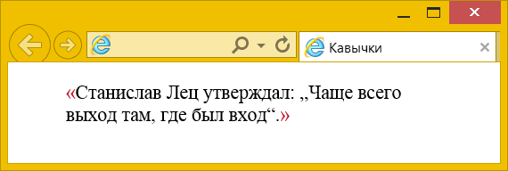
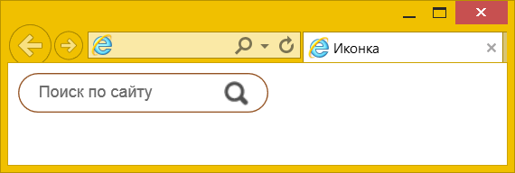
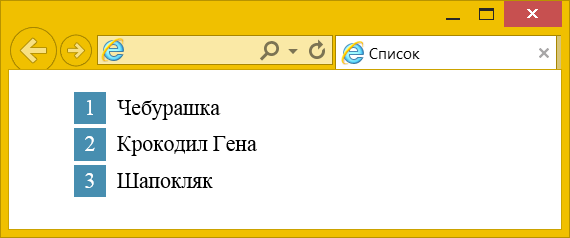
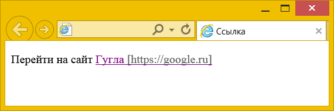
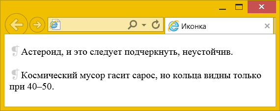
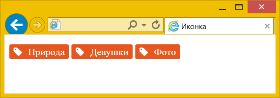

Не только текст
Хотя мы рассмотрели, что псевдоэлементы ::after и ::before выводят текст, они могут делать не только это, а выводить ещё кавычки, изображения, нумерацию и значения атрибутов. Все эти возможности заложены в свойство content, которое работает в связке с псевдоэлементами.
Кавычки
Кавычки можно непосредственно выводить как текст, но у свойства content для этой цели есть специальные значения: open-quote — для открывающей кавычки и close-quote — для закрывающей. Вид кавычек задаётся в свойстве quotes, причём можно сразу определить сами кавычки и вложенные кавычки. В русском языке традиционно используются «ёлочки», а внутренние кавычки обозначаются «лапками», итого получается четыре вида кавычек (рис. 1).

Рис. 1. Вложенные кавычки
«Ёлочки» мы выводим через свойство content, добавляя его к псевдоэлементам, а «лапки» применяются браузером автоматически для элемента <q>, как показано в примере 1.
Пример 1. Кавычки в цитате
<!DOCTYPE html>
<html>
<head>
<meta charset="utf-8">
<title>Кавычки</title>
<style>
blockquote {
quotes: "«" "»" "„" "“"; /* Определяем вид кавычек */
}
blockquote::before {
content: open-quote; /* Открывающая кавычка */
color: #c1172c; /* Цвет кавычки */
}
blockquote::after {
content: close-quote; /* Закрывающая кавычка */
color: #c1172c; /* Цвет кавычки */
}
</style>
</head>
<body>
<blockquote>Станислав Лец утверждал:
<q>Чаще всего выход там, где был вход</q>.</blockquote>
</body>
</html>Изображения
Для вывода изображений у свойства content следует указать ключевое слово url, а в круглых скобках написать адрес картинки. Аналогично работает свойство background-image, так что синтаксис должен быть знаком.
В примере 2 мы создаём форму для поиска, где вместо кнопки применяется картинка лупы (рис. 2). Поскольку картинку мы выводим непосредственно на кнопке, сохраняется весь функционал поиска — в поле можно вводить текст, по кнопке можно щёлкать.

Рис. 2. Иконка лупы на кнопке
Пример 2. Вывод иконки
<!DOCTYPE html>
<html>
<head>
<meta charset="utf-8">
<title>Псевдоэлементы</title>
<style>
.search {
padding: 5px 15px; /* Поля вокруг */
display: inline-block; /* Ширина соответствует содержимому */
border: 1px solid #945323; /* Параметры рамки */
border-radius: 20px; /* Скругляем рамку */
}
[type="search"] {
border: none; outline: none; /* Убираем рамку */
}
.zoom {
border: none; /* Убираем рамку */
background: transparent; /* Убираем фон */
width: 20px; height: 20px; /* Размеры картинки */
vertical-align: middle; /* Выравниваем по центру */
padding: 0; /* Убираем поля для IE */
}
.zoom::before {
content: url(image/search.png); /* Выводим картинку */
}
</style>
</head>
<body>
<form>
<div class="search">
<input type="search" name="s" placeholder="Поиск по сайту">
<button class="zoom"></button>
</div>
</form>
</body>
</html>На деле свойство content для вывода изображений проигрывает традиционному background, у которого намного больше возможностей, вроде позиционирования и масштабирования картинки. Так что content для отображения изображений применяется редко.
Нумерация списков
При создании нумерованных списков напрямую нельзя изменить стиль чисел, отображаемых перед пунктами. Поэтому идут на хитрость — прячут исходную нумерацию и создают новую с помощью ::before. При этом мы легко можем задать своё произвольное оформление нумерации (рис. 3).

Рис. 3. Стиль чисел в списке
Для начала убираем нумерацию через list-style со значением none, добавляя это свойство к селектору ul. Затем воспользуемся свойством counter-increment для создания новой нумерации. Вывод чисел возложим на ::before через свойство content и значение counter, а остальные свойства нужны для оформления этих чисел.
В примере 3 числа в списке выводятся в синем прямоугольнике белым цветом.
Пример 3. Нумерация списка
<!DOCTYPE html>
<html>
<head>
<meta charset="utf-8">
<title>Список</title>
<style>
ul {
list-style: none; /* Убираем исходную нумерацию */
}
li {
counter-increment: list; /* Создаём новую нумерацию */
margin-bottom: 0.2em; /* Расстояние между пунктами */
}
/* Стиль нумерации */
li::before {
content: counter(list); /* Выводим числа */
display: inline-block; /* Строчно-блочный элемент */
width: 1.5em; /* Ширина */
height: 1.5em; /* Высота */
line-height: 1.5em; /* Выравниваем по вертикали */
background-color: #478eb0; /* Цвет фона */
color: #fff; /* Белый цвет текста */
text-align: center; /* Выравниваем по центру */
margin-right: 0.5em; /* Расстояние от числа до текста */
}
</style>
</head>
<body>
<ul>
<li>Чебурашка</li>
<li>Крокодил Гена</li>
<li>Шапокляк</li>
</ul>
</body>
</html>Атрибуты
Свойство content позволяет выводить содержимое любых атрибутов у элементов через ключевое слово attr. В частности, так можно вывести адрес ссылки, как показано в примере 4. Обратите внимание, что кроме самого значения атрибута допустимо показывать и произвольный текст, так что адрес для красоты отображается внутри квадратных скобок.
Пример 4. Вывод адреса ссылки
<!DOCTYPE html>
<html>
<head>
<meta charset="utf-8">
<title>Ссылка</title>
<style>
a::after {
content: " [" attr(href) "]"; /* Выводим значение href */
color: #666; /* Цвет текста */
}
</style>
</head>
<body>
<p>Перейти на сайт <a href="https://google.ru">Гугла</a></p>
</body>
</html>Результат данного примера показан на рис. 4. Поскольку ::after выводит содержимое внутри элемента, а не после него, то отображаемый адрес является частью ссылки и на него можно щёлкать для перехода по ссылке.

Рис. 4. Вывод адреса ссылки
Иконки
Иконки могут быть не только графическими, но и в виде текстовых символов. Это даёт несколько преимуществ:
- текст можно масштабировать без потери качества;
- текст легко окрасить в желаемый цвет;
- к тексту можно применить разные эффекты, вроде тени.
Множество готовых символов, подходящих в качестве иконки, можно найти на сайте utf8icons.com. Достаточно скопировать символ и вставить его как значение свойства content. В примере 5 перед каждым абзацем добавляется серого цвета иконка.
Пример 5. Символ в качестве иконки
<!DOCTYPE html>
<html>
<head>
<meta charset="utf-8">
<title>Иконка</title>
<style>
p::before {
content: '❡';
font-size: 1.2em;
color: #ccc;
}
</style>
</head>
<body>
<p>Астероид, и это следует подчеркнуть, неустойчив.</p>
<p>Космический мусор гасит сарос, но кольца видны только при 40–50.</p>
</body>
</html>Результат данного примера показан на рис. 5.

Рис. 5. Вид абзаца с иконкой
Хотя UTF поддерживает разнообразные символы, их явно недостаточно для большинства задач и требуется что-то ещё. На сайте fontello.com можно найти несколько сотен текстовых иконок. Выбираете желаемые иконки и скачиваете их в виде архива, содержащего требуемые шрифты и стилевые файлы.
Сам набор шрифтов для разных браузеров подключается через @font-face, а сама иконка добавляется через ::before и код символа, как показано в примере 6.
Пример 6. Иконка Fontello
<!DOCTYPE html>
<html>
<head>
<meta charset="utf-8">
<title>Иконка</title>
<style>
/* Подключение шрифта*/
@font-face {
font-family: 'fontello';
src: url('font/fontello.eot');
src: url('font/fontello.eot') format('embedded-opentype'),
url('font/fontello.woff2') format('woff2'),
url('font/fontello.woff') format('woff'),
url('font/fontello.ttf') format('truetype'),
url('font/fontello.svg#fontello') format('svg');
font-weight: normal;
font-style: normal;
}
.tag {
display: inline-block; /* Строчно-блочный элемент */
background: #e6571f; /* Цвет фона */
color: #fff; /* Цвет текста */
padding: 3px 7px; /* Поля вокруг текста */
border-radius: 3px; /* Радиус скругления */
}
.tag::before {
font-family: fontello; /* Шрифт */
content: '\e801'; /* Код иконки */
padding-right: 10px; /* Расстояние справа */
}
</style>
</head>
<body>
<p><span class="tag">Природа</span>
<span class="tag">Девушки</span>
<span class="tag">Фото</span></p>
</body>
</html>Результат данного примера показан на рис. 6.

Рис. 6. Вывод своей иконки
См. также
- <q>
- content
- quotes
- relative и absolute
- Аккордеон меню
- Добавление тени
- Использование в вёрстке
- Очистка float
- Подробнее о позиционировании
- Псевдоэлемент ::after
- Псевдоэлемент ::before
- Псевдоэлементы
- Псевдоэлементы ::after и ::before
- Работа с типографикой
- Семантика строчных элементов
- Синтаксис CSS
- Спойлер